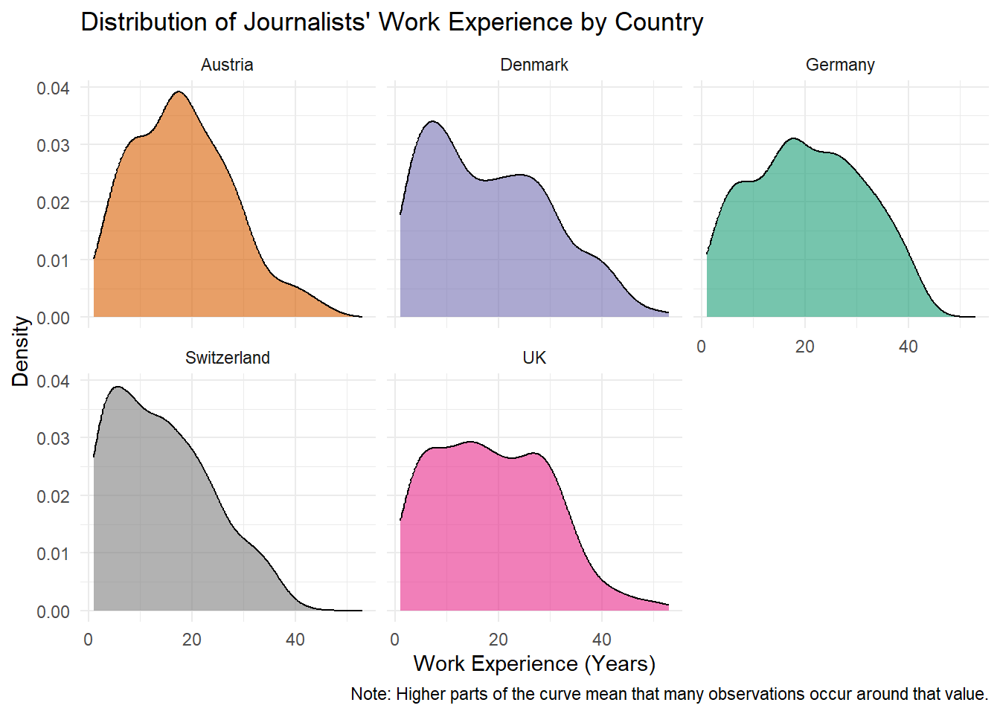
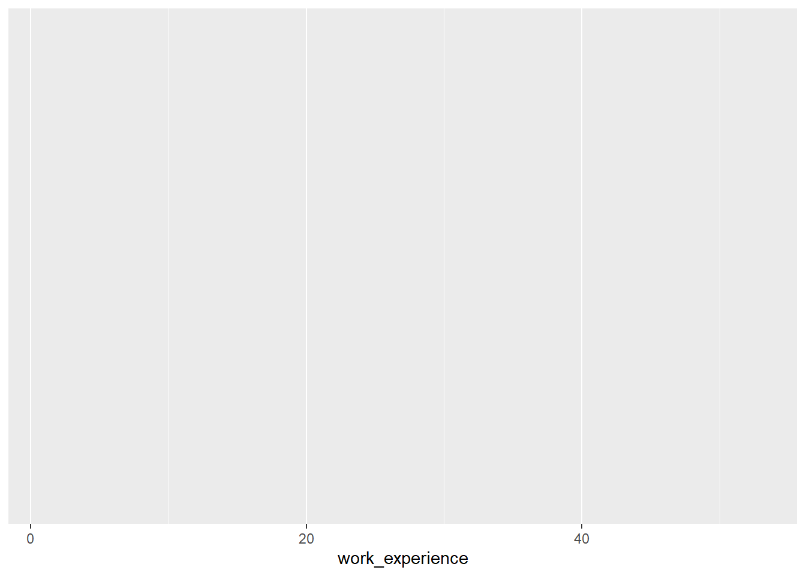
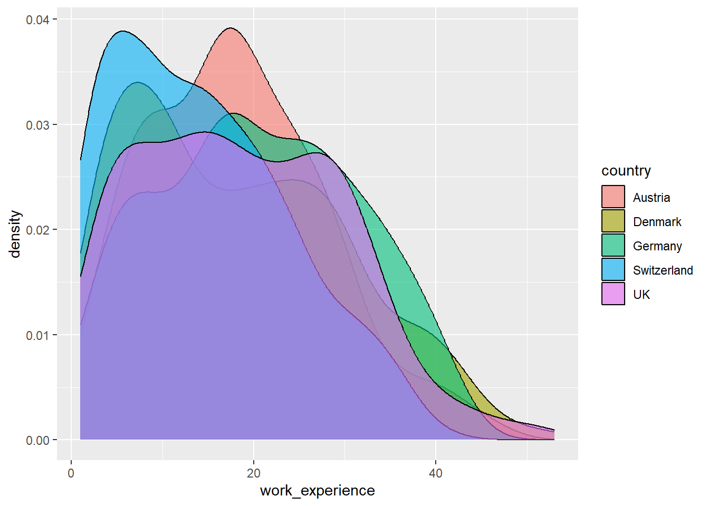
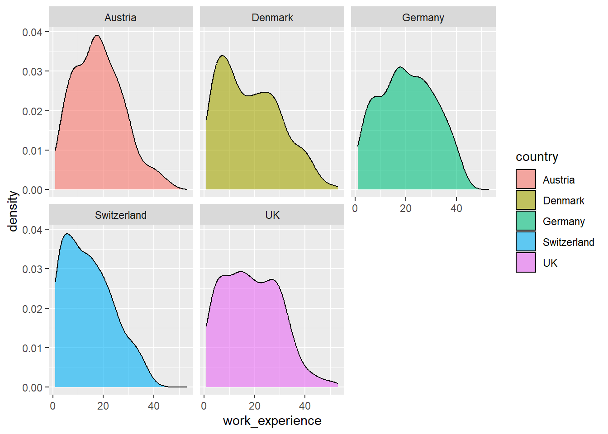
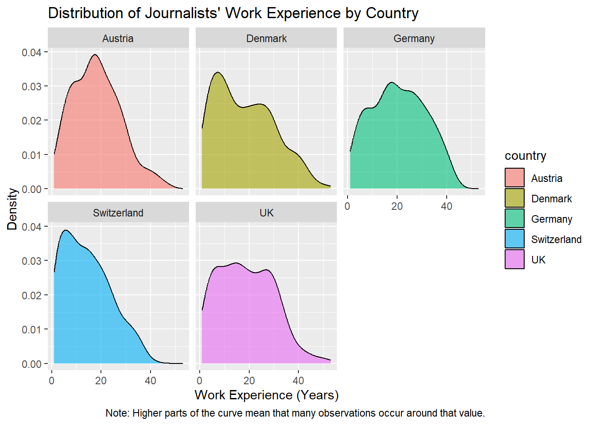
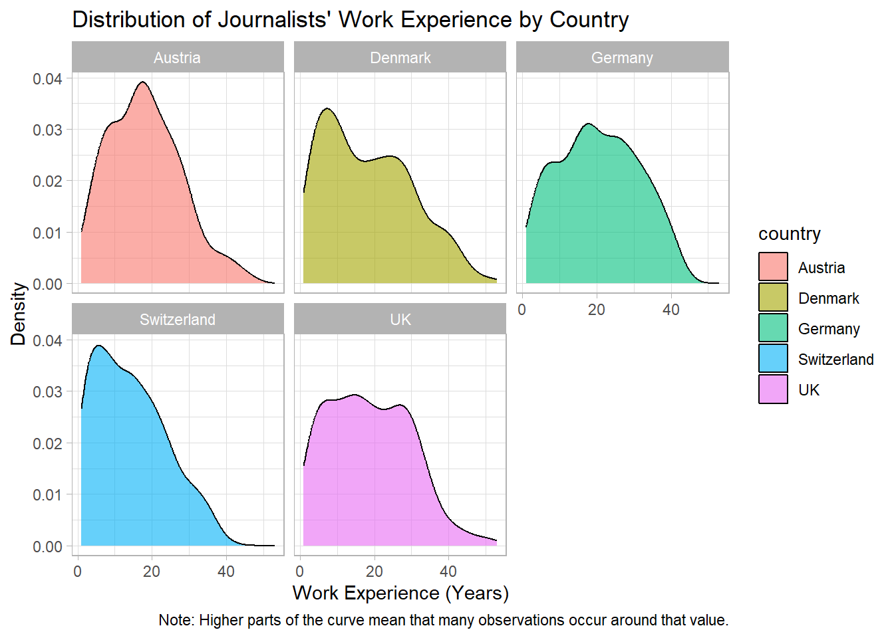
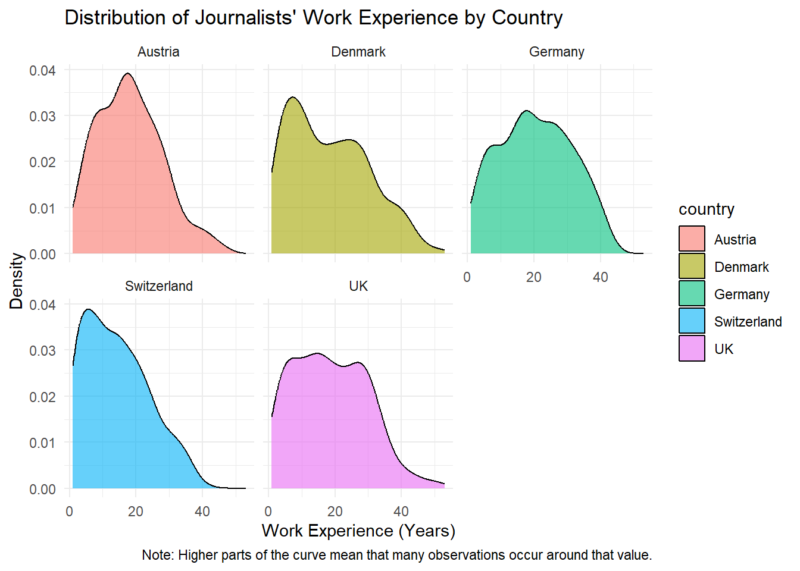
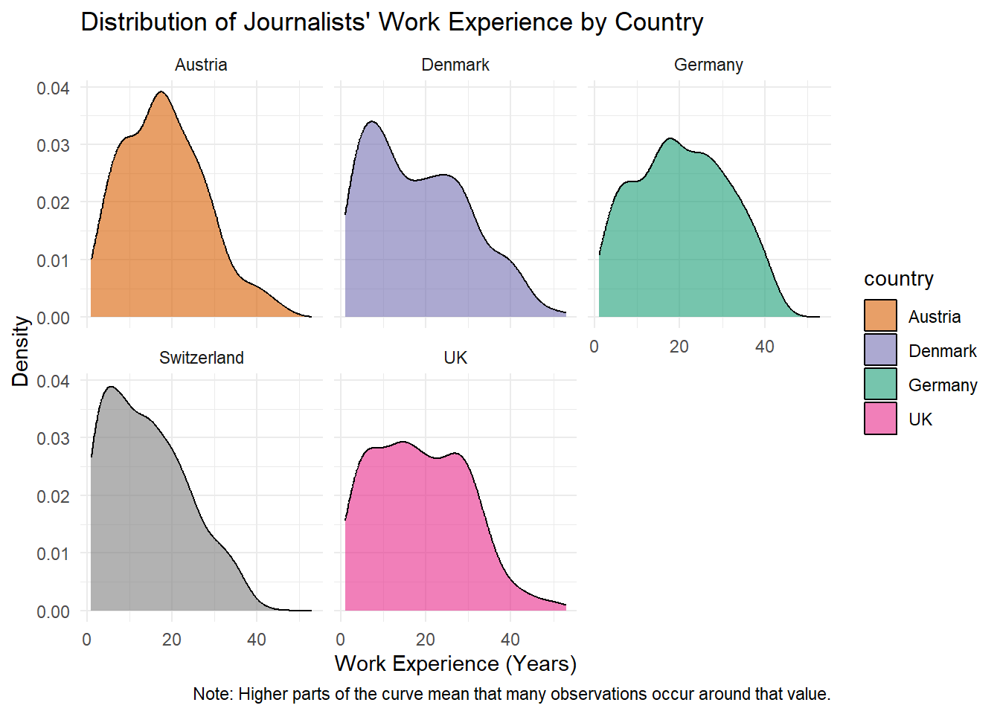
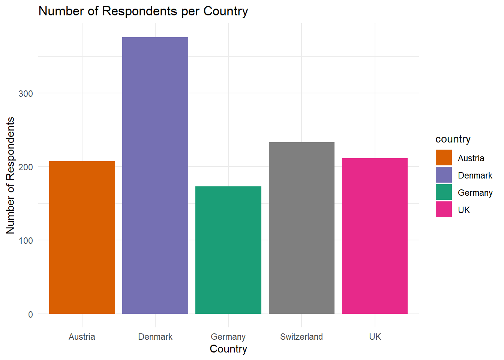
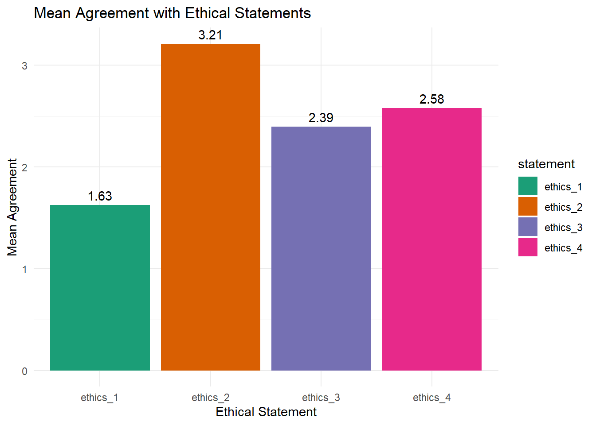

install.packages("ggplot2")
library("ggplot2")7 Creating visuals with ggplot
🎯 Learning goals
After working through Tutorial 7, you’ll be able to…
- Produce nice visuals using
ggplot()
1. The basic logic of ggplot2
In this tutorial, we’ll work with the ggplot2 package. The package is part of the tidyverse.
To create visuals, ggplot2 follows what is called the “Grammar of Graphics”. You provide the raw data to R and then build the graph step by step by adding different layers (e.g., colors, labels) to it. This way, you can easily customize visualizations in R.
“A graphic maps the data to the aesthetic attributes (colour, shape, size) of geometric objects (points, lines, bars).” Wickham et al., 2021, no page; bold words inserted by author
This is, indeed, a very brief description of what is possible with ggplot2. In short, you have to specify the following three components to create a graph with the ggplot() command:
data, i.e., the data that should be visualized
aesthetics, i.e., which data (for instance variables) should be mapped to which visual elements using aes()
geoms, i.e., the type of graphical representation that should be created
However, you can specify many more details, for instance the…scales of your graph, for example how the x- and y-axes should be displayed and scaled
themes of your graph, for example by using predefined sets of backgrounds and formatting options
Before doing anything else, install the ggplot2 package and load it.
Important:
In this tutorial, I will only introduce the very basics of visualizing data in R.
The goal is for you to become proficient enough to create basic graphs using R (instead of SPSS or Excel). However, please be aware that there are many, many more options for visualizing data.
If you have further questions about visualizing data in R, the following two tutorials/guides are excellent resources:
2. Let’s do it: Recreating a graph!
Our goal for today: We want to reproduce the following graph which visualizes the distribution of journalists’ work experience (in years) for each country, using the WoJ dataset.

3. Data
Let’s start with the most basic step: getting the data and telling R which data to use to create a graph with ggplot().
We will again use the WoJ dataset. It contains quantitative survey data from N = 1,200 journalists in five countries, collected as part of the World of Journalism Study.
First, we retrieve the data and save it as an object named data_woj. Make sure to have the tidycomm and tidyverse packages installed before running this command!
# we load the necessary packages
library(tidycomm)
library(tidyverse)
# loads the WoJ dataset shipped with tidycomm
data_woj <- tidycomm::WoJ
# we inspect the data
data_woj |>
as_tibble() |>
head()# A tibble: 6 × 15
country reach employment temp_contract autonomy_selection autonomy_emphasis
<fct> <fct> <chr> <fct> <dbl> <dbl>
1 Germany Nati… Full-time Permanent 5 4
2 Germany Nati… Full-time Permanent 3 4
3 Switzerla… Regi… Full-time Permanent 4 4
4 Switzerla… Local Part-time Permanent 4 5
5 Austria Nati… Part-time Permanent 4 4
6 Switzerla… Local Freelancer <NA> 4 4
# ℹ 9 more variables: ethics_1 <dbl>, ethics_2 <dbl>, ethics_3 <dbl>,
# ethics_4 <dbl>, work_experience <dbl>, trust_parliament <dbl>,
# trust_government <dbl>, trust_parties <dbl>, trust_politicians <dbl>Now, we need to tell R to use this data. Specifying the data is a necessary part of the ggplot() function, meaning that you have to tell R which data to use.
Here, we want to plot the distribution of journalists’ work experience across countries.
We’ll start by plotting this data by simply handing the dataset data_woj over to the ggplot() function.
Note that, using the filter() command, we first remove all observations with missing values (NAs) for work_experience, as these cannot be plotted.
data_woj |>
# we remove missing values for work_experience
filter(!is.na(work_experience)) |>
# we hand over the data to the function
ggplot()
As a result, we see that not much has happened: R does not give us an error message, but only creates an “empty” graph.
The reason is that we have not yet specified which variables should be visualized and how (i.e., the other two necessary components for creating a graph).
4. Aesthetics
Next, we need to specify the aesthetics component.
This is a necessary component, meaning that you have to tell R which data (for instance variables) should be mapped to which visual elements using aes().
In aes(), you can, for instance, pass values to the following arguments:
x: the variable that should be mapped to the x-axisfill: the variable that should be used for filling a geometric object with a specific color
(and many more, but these are the elements we need here).
Let’s define the aesthetics for our plot:
We want the x-axis to show journalists’
work experiencein years. Thus, we setx = work_experienceinaes().We also want the different countries to be represented by different colors. Thus, we set
fill = countryinaes().
If we run the following command, R now knows which variable should be mapped to the x-axis and which variable should determine the fill color. You can see that R already adjusted the labels on the axes.
data_woj |>
# we remove missing values for work_experience
filter(!is.na(work_experience)) |>
# NEW: we add variables
ggplot(aes(x = work_experience, fill = country))
However, the graph still does not show the final result yet. The reason is that we have not fully specified the graphical representation. In addition to the data and aesthetics, we still need to define the geom, that is, the type of graph that should be created.
5. Geoms
Lastly, we need to define the geometric component as the last necessary component: you have to tell R which type of graph should be created.
You can, for instance, use the following commands to create different graphs (simply type geom() in the script, and RStudio will automatically propose many options, including:
geom_bar()to create a bar chartgeom_line()to create a line graphgeom_point()to create a scatter plotgeom_boxplot()to create a box plot
(and many more, but these are the ones we’ll cover in Tutorial 7).
Here, we want to create a density plot using the geom_density() function.
In short, this function plots a density estimate, that is, a smoothed representation of the distribution of a numeric variable. In our case, it helps us see where values of work_experience are concentrated and how the distribution differs across countries.
We simply add the graph we want to create, here geom_density(), to our function as a new layer using the + sign.
The argument alpha controls the transparency of the color used to fill the density curves. The value ranges from 0 (completely transparent) to 1 (completely opaque).
Here, we set alpha = 0.6, meaning the colors are slightly transparent. This makes the plot easier to read when multiple graphical elements overlap.
data_woj |>
# we remove missing values for work_experience
filter(!is.na(work_experience)) |>
# we hand over the data to the function and add variables
ggplot(aes(x = work_experience, fill = country)) +
## NEW: add the geometric component
geom_density(alpha = 0.6)
Great: this worked! We have now created the first complete graph for our data.
At this stage, the plot already shows the distribution of journalists’ work experience. In the next step, we no longer make necessary decisions (i.e., to create a graph) but optional ones, meaning those “only” intended to make the graph nicer.
Here, we can further improve it by splitting the graph into separate panels for each country and by adding titles and a note.
6. Facets
Next, we want to improve the readability of our graph by creating separate panels for each country.
In ggplot2, this can be done using the concept of faceting. Faceting means that the data are split according to the values of a variable and displayed in separate subplots.
This is particularly useful when comparing distributions across groups.
To create facets in ggplot2, we can use the function facet_wrap().
In our case, we want to create one panel for each country. Thus, we pass the variable country to the function.
data_woj |>
# we remove missing values for work_experience
filter(!is.na(work_experience)) |>
# we hand over the data to the function and add variables
ggplot(aes(x = work_experience, fill = country)) +
# we add the geometric component
geom_density(alpha = 0.6) +
# NEW: we create separate panels for each country
facet_wrap(~country)
As a result, the graph is now split into several panels, one for each country.
This makes it easier to compare the distributions of journalists’ work experience across countries, as each country is displayed in its own subplot.
Note that the ~ symbol indicates that the variable country should be used to create the facets.
In the next step, we will further improve the presentation of the graph by adding titles, axis labels, and a note explaining how the density values should be interpreted.
7. Labels and titles
You can titles and labels to make your graph more informative.
For example, you can change:
- the scaling of axes
- the titles of axes
- the title of the graph
- the colors used in the plot
- captions or notes explaining the graph
In this tutorial, we will mainly focus on improving the labels and titles of our graph.
We will now assign our graph a clear title. We will also change the titles for the x- and y-axes.
You should always assign clear titles to graphs, axes, and legends so readers understand what type of data the graph visualizes and which variables are shown.
We can add a title for the graph and both axes using the labs() command.
Here, we assign the graph the title Distribution of Journalists’ Work Experience by Country. We also label the x-axis x Work Experience (Years) and the y-axis y Density.
Finally, we add a short note explaining how the density values should be interpreted using caption.
data_woj |>
# we remove missing values for work_experience
filter(!is.na(work_experience)) |>
# we hand over the data to the function and add variables
ggplot(aes(x = work_experience, fill = country)) +
# we add the geometric component
geom_density(alpha = 0.6) +
# we create separate panels for each country
facet_wrap(~country) +
# NEW we add graph and axis titles
labs(
title = "Distribution of Journalists' Work Experience by Country",
x = "Work Experience (Years)",
y = "Density",
caption = "Note: Higher parts of the curve mean that many observations occur around that value."
)
8. Themes
Another way to improve the appearance of a graph is by adjusting its theme.
Themes control the visual style of a graph. While scales determine how data are displayed (for example axis labels or colors), themes determine the overall formatting of the plot.
With themes, you can change elements such as:
- the background of the graph
- grid lines
- font size of axis labels and titles
- the appearance and position of the legend
ggplot2 already provides several predefined themes that you can easily apply. You can see an overview of available themes here.
Some commonly used examples are:
theme_minimal()– a clean design with very little visual clutter
theme_classic()– a style similar to traditional statistical graphics
theme_bw()– a black-and-white theme often used for publications
If you type theme_ in your script and wait for RStudio to auto-complete your search, you will see several options. To apply a theme, you simply add it as another layer using the + operator.
For instance, the light theme theme_light() creates a plot with a white background and light grid lines, which can make the graph easier to read.
data_woj |>
# we remove missing values for work_experience
filter(!is.na(work_experience)) |>
# we hand over the data to the function and add variables
ggplot(aes(x = work_experience, fill = country)) +
# we add the geometric component
geom_density(alpha = 0.6) +
# we create separate panels for each country
facet_wrap(~country) +
# we add graph and axis titles
labs(
title = "Distribution of Journalists' Work Experience by Country",
x = "Work Experience (Years)",
y = "Density",
caption = "Note: Higher parts of the curve mean that many observations occur around that value."
) +
# NEW: we add the light theme
theme_light()
Here, we use theme_minimal() to create a clean and simple background.
data_woj |>
# we remove missing values for work_experience
filter(!is.na(work_experience)) |>
# we hand over the data to the function and add variables
ggplot(aes(x = work_experience, fill = country)) +
# we add the geometric component
geom_density(alpha = 0.6) +
# we create separate panels for each country
facet_wrap(~country) +
# we add graph and axis titles
labs(
title = "Distribution of Journalists' Work Experience by Country",
x = "Work Experience (Years)",
y = "Density",
caption = "Note: Higher parts of the curve mean that many observations occur around that value."
) +
# NEW: we add the minimal theme
theme_minimal()
As you can see, changing the theme does not affect the data or the structure of the graph. It only changes how the graph is visually presented.
9. Colors
Another way to improve the readability of a graph is by adjusting the colors used in the visualization.
Colors can help readers quickly distinguish between groups or categories in the data. In ggplot2, colors are usually assigned through the aesthetics we defined earlier.
For example:
colorcontrols the color of lines or points
fillcontrols the interior color of objects such as bars, boxes, or density curves
In our example, we already mapped the variable country to the argument fill inside aes(). This means that ggplot2 automatically assigns different colors to each country.
However, you can also manually specify which colors should be used.
For instance, the function scale_fill_manual() allows you to define specific colors for each category.
data_woj |>
# we remove missing values for work_experience
filter(!is.na(work_experience)) |>
# we hand over the data to the function and add variables
ggplot(aes(x = work_experience, fill = country)) +
# we add the geometric component
geom_density(alpha = 0.6) +
# we create separate panels for each country
facet_wrap(~country) +
# we add graph and axis titles
labs(
title = "Distribution of Journalists' Work Experience by Country",
x = "Work Experience (Years)",
y = "Density",
caption = "Note: Higher parts of the curve mean that many observations occur around that value."
) +
# we add the minimal theme
theme_minimal() +
# NEW: we manually define colors
scale_fill_manual(values = c(
"Germany" = "#1b9e77",
"Austria" = "#d95f02",
"Denmark" = "#7570b3",
"UK" = "#e7298a",
"USA" = "#66a61e"
))
There are a lot of different colors in R, as you can for instance see in this overview. Moreover, there are nice color palettes including a range of colors that work well together for data visualization, as you can see in this overview. Of particular popularity here is, for example, the RColorBrewer package offering some really nice palettes for visualization.
That’s it - we have recreated our graph, nice work!
10. Saving images
Lastly, you may want to save your graph externally so that you can later use the image in reports, presentations, or seminar papers.
In ggplot2, this can be done with the function ggsave().
A common workflow is to first save the plot in an object and then export it as an image file.
plot_woj <- data_woj |>
# we remove missing values for work_experience
filter(!is.na(work_experience)) |>
# we hand over the data to the function and add variables
ggplot(aes(x = work_experience, fill = country)) +
# we add the geometric component
geom_density(alpha = 0.6) +
# we create separate panels for each country
facet_wrap(~country) +
# we add graph and axis titles
labs(
title = "Distribution of Journalists' Work Experience by Country",
x = "Work Experience (Years)",
y = "Density",
caption = "Note: The density value shows where the observations are concentrated. Higher parts of the curve mean that many observations occur around that value."
) +
# we add the minimal theme
theme_minimal() +
# we manually define colors
scale_fill_manual(values = c(
"Germany" = "#1b9e77",
"Austria" = "#d95f02",
"Denmark" = "#7570b3",
"UK" = "#e7298a",
"USA" = "#66a61e"
))Now we can save this plot to our computer using ggsave().
ggsave(
filename = "output/images/myplot.jpeg",
plot = plot_woj,
width = 8,
height = 5,
dpi = 300
)The arguments in ggsave() mean the following:
filenamespecifies the name of the file and its format (for example.jpeg,.png, or.pdf). Important: We have the file in the subfolder “output/images”. This needs to already have been created to work!plotspecifies which plot object should be savedwidthandheightdefine the size of the image (in inches)dpicontrols the resolution of the image (300 dpi is common for printed documents)
💡 Take-Aways
Creating a graph:
ggplot()Mapping data to visual elements:
aes(x, y, fill, color, etc.)Choosing the type of graph:
geom_bar(),geom_line(),geom_point(),geom_boxplot(),geom_density()(for example)Splitting a graph into panels:
facet_wrap()Adding titles and labels:
labs()Adjusting scales (e.g., axis labels or colors):
scale_*()such asscale_fill_manual()Changing the visual style of a graph:
theme_minimal(),theme_classic(),theme_light()(for example)Saving graphs as image files:
ggsave()
🎲 Quiz
📚 More tutorials on this
You still have questions? The following tutorials & papers can help you with that:
- Chang, W. R (2026) R Graphics Codebook. Practical Recipes for Visualizing Data. Link
- Wickham et al. (2021). ggplot2: elegant graphics for data analysis. Online, work-in-progress version of the 3rd edition. Link
- Hehman, E., & Xie, S. Y. (2021). Doing Better Data Visualization. Advances in Methods and Practices in Psychological Science. DOI: 10.1177/25152459211045334 Link
📌 Test your knowledge
Task 1 (Easy🔥)
Use the existing command to create a graph. In this code, make the following changes:
- Change all density plots to
blackusing “black” - Change the title to “World of Journalism Study - Work Experience”
- Change the theme to
theme_bw()
data_woj |>
# remove missing values
filter(!is.na(work_experience)) |>
# create the plot
ggplot(aes(x = work_experience, fill = country)) +
geom_density(alpha = 0.6) +
facet_wrap(~country) +
labs(
title = "Distribution of Journalists' Work Experience by Country",
x = "Work Experience (Years)",
y = "Density"
) +
theme_minimal() +
## manually define colors ##
scale_fill_manual(values = c(
"Germany" = "#1b9e77",
"Austria" = "#d95f02",
"Denmark" = "#7570b3",
"UK" = "#e7298a",
"USA" = "#66a61e"
))Task 2 (Medium🔥🔥)
From scratch: Create a bar plot that plots the number of respondents per country. It should look like this:

Task 3 (Hard🔥🔥🔥)
From scratch: Create a bar plot that plots average agreement to ethical statements (ethics_1, ethics_2, ethics_3, ethics_4). Add the mean agreement for each statement on top of each bar.
For this task, you are allowed to work with ChatGPT!
